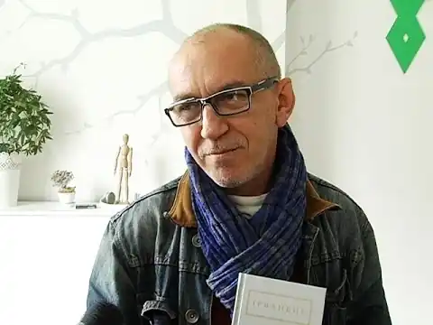

Народився 24 січня 1961 року у Львові. Виріс у Рівному. 1980 року закінчив Дубенське педагогічне училище. Після – вчителював. 1989 року – Московський Літературний інститут. Один із учасників літературного гурту Бу-Ба-Бу (Юрій Андрухович, Віктор Неборак). Підскарбій Бу-Ба-Бу.
Автор книг віршів "Вогнище на дощі" (1987) і "Тінь великого класика" та інші вірші" (1991), "Вірші останнього десятиліття" (2001)
Окремі вірші було перекладено англійською, німецькою, французькою, шведською, польською, білоруською, російською мовами. Роман "Рівне/Ровно" було перекладено польською мовою і вже двічі видано в Польщі. З 1993 року постійно мешкає в Ірпені під Києвом. Перекладає з білоруської, польської та англійської мов. У перекладах Ірванця побачили світ книжки Василя Бикова "Ходільці: оповідання" (2005), Уладзімера Арлова "Реквієм для бензопилки" (2005), Яноша Гловацького "Четверта сестра". Лауреат премії Фонду Гелен Щербань-Лапіка (США) 1995 року. Стипендіат Академії Шльосс Солітюд (Німеччина) 1995 року. Член жюрі театрального фестивалю "Боннер Бієнналє" 2000 та 2002 років. П’єси Олександра Ірванця ставилися у Німеччині, Україні та Польщі. 2001-го збірка драматургії "Recording i inne utwory" в перекладах Пшемислава Томанка вийшла у краківському видавництві "Ksiegarnia Akademicka". Автор "П’яти п’єс". Член білоруського ПЕН-клубу.